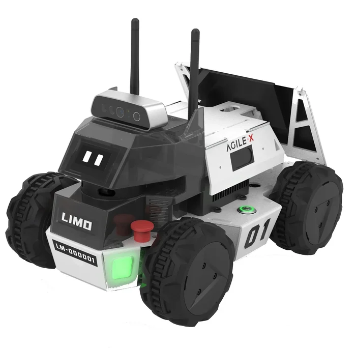

Autonomous navigation with LIMO robot using ROS 1 and RTAB-Map

Project Summary:
Integrated RTAB-Map for SLAM and configured the full navigation stack to enable reliable path planning in dynamic environments. The project showcased indoor maze traversal using real-time localization and costmap tuning.
üõ†Ô∏è Tools & Tech
RTAB-Map SLAM
ROS 1 Melodic on Ubuntu 18.04
RViz, Gazebo, Python
Navigation Stack, AMCL, TF
LIMO Robot
ü߆ Key Features
SLAM-based map building with RTAB-Map
Costmap tuning for narrow indoor paths
Reliable navigation in dynamic settings
Custom TF: odom → base_link → laser
üé• Project Video Demo
üìå Outcome
Successfully demonstrated autonomous maze navigation using ROS. Fine-tuned localization and motion planning enabled real-time adjustments and reliable obstacle avoidance across a customized Changi Terminal 4-inspired environment.